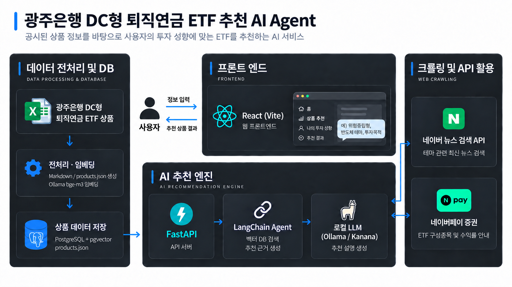

FEAT_01
AI 맞춤 추천
투자성향·관심 테마·투자 목적을 자연어로 입력하면, 조건에 맞는 ETF/펀드를 추천 이유·위험등급·총보수·최근 수익률과 함께 카드 형태로 보여줍니다.
OVERVIEW
자연어 질의를 기반으로 금융상품을 검색하고, 정형·비정형 정보를 결합해 상품 비교와 설명을 지원하는 RAG 시스템입니다. 광주은행 DC형 퇴직연금에서 편입 가능한 ETF·펀드를 대상으로 기획부터 데이터 수집, 백엔드/프론트엔드 구현, 검색 품질 평가까지 전 과정을 1인으로 진행했습니다.
DEMO
서비스 화면
"퇴직연금에 투자할 만한 ETF를 추천해줘" 같은 자연어 질의로 바로 추천을 받을 수 있습니다.
투자성향·관심 테마·투자 목적을 자연어로 입력하면, 조건에 맞는 ETF/펀드를 추천 이유·위험등급·총보수·최근 수익률과 함께 카드 형태로 보여줍니다.
ETF 카드에서 클릭 한 번으로 실제 편입 종목과 비중을 펼쳐서 확인할 수 있습니다(최초 조회 후 캐시).
AI 없이 17개 테마 버튼으로 즉시 상품 목록을 탐색할 수 있고, 추천된 상품들의 수익률은 막대그래프로 한눈에 비교됩니다.
PROBLEM & GOAL
왜 이 프로젝트를 만들었는가
DC형 퇴직연금은 가입자가 수백 개 상품 목록 안에서 직접 투자상품을 골라야 하는데, 상품마다 위험등급·보수·수익률·투자 테마가 제각각이라 비교가 어렵습니다.
TDF2025·TDF2040·TDF2050처럼 숫자만 다른 생애주기 상품이 많아, 검색·응답 과정에서 엉뚱한 상품을 가리킬 위험이 있습니다.
LLM이 수익률·보수 같은 금융 수치를 자연어 응답 과정에서 부정확하게 생성(hallucination)할 가능성이 있습니다.
금융상품을 정확하게 검색하고, 검증된 수치에 근거해 설명하는 Agent를 구현하는 것.
ARCHITECTURE
전체 시스템 구조

/recommend, /compare, /rank, /themes, /holdings, /news 등 9개 REST 엔드포인트를 직접 설계했습니다. 벡터 검색·AI 응답이 필요한 경로와, AI 없이 즉시 응답하는 결정론적 조회 경로를 명확히 분리했습니다.
검색은 벡터 데이터베이스(PostgreSQL + pgvector)를, 정확한 수치가 필요한 조회·비교는 별도의 정형 데이터(products.json)를 쓰도록 분리했습니다. AI가 숫자를 잘못 옮겨 적는 걸 막기 위한 설계입니다.
채팅·임베딩 모델을 전부 로컬(Ollama, kanana-1.5-2.1b-instruct / bge-m3)로 구동하도록 했습니다. 같은 저자의 대출 상품 추천 프로젝트에서 고객 재무 정보를 외부로 보낼 수 없다는 제약을 다뤘던 것과 같은 맥락에서, 금융 데이터를 다루는 서비스는 처음부터 온프레미스로 설계하는 패턴을 이어갔습니다.
기획, 데이터 수집/변환, 백엔드 API, AI Agent 설계, 프론트엔드, 검색 품질 평가까지 전 영역을 1인으로 담당했습니다.
TROUBLESHOOTING
기술적 문제 해결 사례
기본 설정(청크 2,000자)에서 테마 질의 검색 품질이 기대보다 낮음 — Precision@10 63.9%
청크가 너무 커서 관련 없는 설명까지 함께 임베딩되어, 벡터가 특정 테마를 선명하게 나타내지 못함
청크 크기(100/200/500/1,000/2,000자)와 질의 템플릿·top-k를 바꿔가며 18개 질의에 대한 검색 품질을 비교하는 실험을 진행
청크 100자가 최적 — Precision@10 87.2%, Hit Rate 100%, MRR 0.911로 개선되어 최종 설정으로 채택
운영 벡터DB 435개 상품 중 415개가 "테마" 키워드 없이 임베딩되어 테마 기반 검색 품질이 저하된 상태로 서비스되고 있었음
임베딩 생성 스크립트가 상품 설명 텍스트만 사용하고 테마 필드를 포함하지 않음
테마 필드를 포함해 전체 상품을 재임베딩하고, 같은 평가 방법(Precision@k, Hit Rate, MRR)으로 수정 전/후를 비교하는 스크립트(theme_fix_before_after.py) 작성
재라벨링이 끝나는 대로 최종 개선폭을 공개할 예정 (진행 중)
EVALUATION
검색 정확도 개선 결과
18개 질의에 대해 사람이 직접 관련도를 Y/N으로 라벨링하고, Precision@10 · Hit Rate · MRR을 측정했습니다. Hit Rate는 Wilson 신뢰구간, Precision·MRR은 부트스트랩으로 95% 신뢰구간을 함께 계산했습니다.
Hit Rate@10: 88.9% → 100% / MRR: 0.844 → 0.911 (청크 2,000자 → 100자)
17개 투자 테마 전체 커버리지 평가(18개 질의)에서는 Hit Rate 88.9%(16/18), MRR 0.80을 기록했습니다. 상품 수가 적은 '기타'·'소비재' 테마는 실패했습니다.
RETROSPECTIVE
한계점 및 향후 개선 방향
단기 수익률 크롤링을 매일 수동 실행해야 데이터가 최신 상태로 유지됩니다 — 갱신 자동화(스케줄러)가 필요합니다.
상품 수가 적은 '기타'·'소비재' 테마는 검색 정확도가 낮아, 더 다양한 질의에 대한 성능 검증과 테마 재분류가 필요합니다.
구조화 로깅, 인증, Docker 기반 배포 자동화 같은 운영 요소가 아직 보완되지 않았습니다.